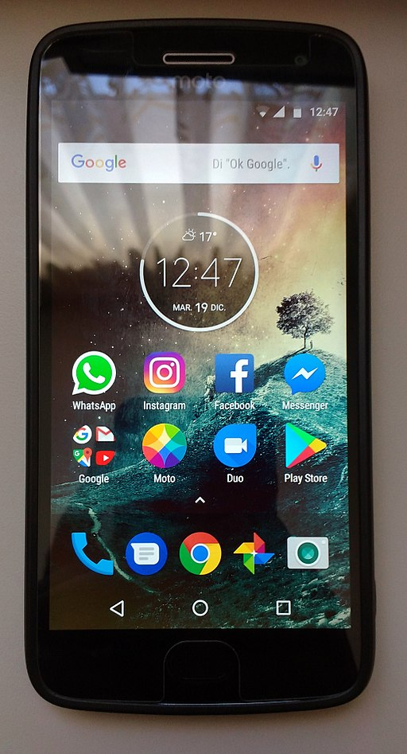

Motorola Moto G5 Plus (motorola-potter)
|
 Moto G5 Plus | |
| Manufacturer | Motorola |
|---|---|
| Name | Moto G5 Plus |
| Codename | motorola-potter |
| Released | 2017 |
| Category | testing |
| Original software | Android 7.0 Nougat |
| Hardware | |
| Chipset | Qualcomm MSM8953 Snapdragon 625 |
| CPU | Octa-core 2.0 GHz Cortex-A53 |
| GPU | Adreno 506 |
| Display | 1080 x 1920 IPS LCD |
| Storage | 32/64 GB |
| Memory | 2/4 GB |
| Architecture | aarch64 |
| Unixbench Whet/Dhry score | 3690.3 |
{kind=link}
| USB Networking |
Works
|
|---|---|
| Flashing |
Works
|
| Touchscreen |
Works
|
| Display |
Works
|
| WiFi |
Works
|
| FDE | |
| Mainline |
Works
|
| Battery |
Partial
|
| 3D Acceleration |
Works
|
| Audio |
Works
|
| Bluetooth |
Works
|
| Camera |
Broken
|
| GPS |
Broken
|
| Mobile data |
Broken
|
| SMS |
Partial
|
| Calls |
Partial
|
| USB OTG | |
| NFC | |
| Accelerometer |
Broken
|
|---|---|
| Magnetometer | |
| Ambient Light | |
| Proximity | |
| Hall Effect | |
| Ir TX | |
|---|---|
| TrustZone | |
| Note: This page is about motorola-potter. For Motorola Moto G5S Plus, see motorola-sanders. |
Contents
Contributors
- chin123
- uknown
- Kreastr
Maintainer(s)
- uknown
Bootloader Unlocking
Motorola provides online tool and instructions on how to get bootloader unlock key: https://motorola-global-portal.custhelp.com/app/standalone/bootloader/unlock-your-device-c Make sure you use your real e-mail as you will get your unlock key there.
The tool sometimes fails for unknown reason even when it should provide the key. You can check the list of eligible CIDs and extra information on the process in this forum https://forums.lenovo.com/t5/MOTOROLA-Android-Developer-Community/Bootloader-Unlock-Problems/m-p/3222809?page=1 If you should be eligible but the tool reports otherwise post a message in that thread to get support. Alternatively you can just wait for 12-72 hours and try again. The tool might work at differen moment of time. Also if many people have posted about failure to unlock recently the chances are high that it is the tool's backend.
How to enter flash mode
- Power + Volume Down buttons
Installation
$ pmbootstrap flasher flash_rootfs
$ pmbootstrap flasher boot
Photos
Device status with the mainline-ish kernel
Only tested on XT1686, the Indian variant, with board_id = <0x46, 0x83a0>. It should work on other devices, but may not. |
| On XT1685 with Tianma panel, using the edge version of pmOS circa Oct 2021 display does not work out of the box. The backlight flickers and display is filled with blue color. |
| Some variants have a slightly different USB config, that isn't set up on mainline. Using mainline on those devices is dangerous, please don't use it unless you know what you're doing. |
| The device needs lk2nd to boot the mainline kernel. lk2nd for msm8953 is packaged in pmaports, and it is possible to compile and install it manually. See https://github.com/msm8953-mainline/lk2nd |
Display
There are two panel supliers: Boe and Tianma. The panel will be selected at boot via lk2nd, based on the cmdline from the bootloader.
Boe
The Boe panel works as expected, with colours and backlight controls
Tianma
The Tianma panel also works as expected
Storage
Internal Storage
Works as expected.
SD Card
Works, but card detection is broken.
GPU
Works, but preemption is broken. See msm8953 status.
Touchscreen
Synaptics 3203B. Works as expected.
USB
ssh and telnet work. Low power mode does not work (broken on downstream too). Until low power mode was disabled, ssh and telnet were unusable, failing to send data properly.
Battery
Reporting is done via the qcom-fg driver. There is a WIP charger driver that supports OTG and other basic charging.
NFC
NXP PN548. It is very similar to the already mainlined PN544, it just needs 2 extra clocks. However, enabling those clocks causes a hang.
LEDs
The front charging LED doesn't work, as the temporary driver was dropped. It has 4 states: off, blink slow, blink fast, on. Its a Qualcomm ATC LED, so adding support for it should be easy.
WiFi
Works as expected, can connect to 2.4GHz and 5GHz 802.11n networks.
Bluetooth
Works, uses the same WiFi controller. Userspace may need additional tools installed to see the device. Also, the device doesn't power on by default, it must be manually powered on via bluetoothctl
Modem
The modem needs special firmware from /persist that is unique to each device, along with a patched tqftpserv. Follow the instructions User:TravMurav/Dual-Sim_QMI_draft to get the modem fully "ready". Experimental patches for IPA v2 on mainline exist, using those allows the modem to make/receive calls and send/receive SMS. Without IPA, the modem will crash and complain about missing IPA. Also, neither stock ofono nor ModemManager support QRTR based modems. An MR has been made for ModemManager, for ofono look at the MSM8953 status page on this wiki.
Modem boot process
The modem needs some data to be written to SMEM, lk2nd currently handles this. Following that, the modem is booted up by the kernel. Then the modem connects via QRTR to rmtfs and tqftpserv. It downloads the modem firmware from rmtfs. It makes TFTP requests for other files, which are handled via tqftpserv. The tqftserv files are where it derives the IMEI and other important data from. Following this, the modem application ID must be set (as it is a dual sim phone). Once that is done, the modem attempts to communicate with the IPA driver via QMI. After communicating with the IPA service, the modem is then "ready". It can be used with ofono or ModemManager.
Audio
Uses ADSP + speaker. Works as expected with ucm from the msm8916 alsa-ucm fork. There is however a mild hiss on headphones when no audio is playing.
Anything that isn't listed above can be assumed to not work.
See also: MSM8953 mainlining status
Links
- GSM Arena specifications page: https://www.gsmarena.com/motorola_moto_g5_plus-8453.php
- TWRP Recovery: https://twrp.me/motorola/motorolamotog5plus.html